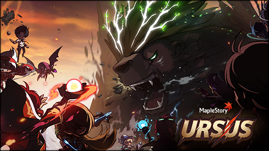

Why
A lot of mesos. Can expect 40m - 80m meso for about 10 minutes of work.
Mechanics
Damage
During Ursus everyone has a new damage range - based on Star Force. The more star force you have, the more damage you will do. Weapons, and % main stat potential will not help here.
There are some exceptions like Arcana Orbs or few potentials, but 90% of the damage will be based on Star Force
Limited Items
You are limited to 20 potions. These are re-filled if you die and respawn
Maximum 80 respawns per team.
Ursus attacks
She is pretty easy to tank and deal with only exception being her OHKO (one hit knock out) moves. She will begin to start charging and attack for about 10 seconds. You have to jump on top of her or you will die.
Try to use this time to revive someone who has died.
Reviving
You cannot revive yourself. If you want to revive someone else, just stand on top of their corpse and hole [SPACE]. It is always [SPACE], it does not matter what your key bindings are.
Rewards
You will gain exp and mesos based on your score. Score is based on damage dealt, amount healed, and number of revives you did.
Usually need around 10b of damage to get meso rewards
Double mesos
You can get double mesos for Ursus after 22:00 CET